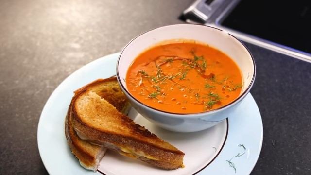

Grilled Cheese & Tomato Soup
Description:
An ole American classic dish. Apparently first made by a women named Lorena Howell in the 1920s. Recipe inspired by Adam Ragusea.
Ingredients:
Tomato Soup:
- 1 large onion
- 1 fennel bulb (optional)
- 1 stick 4oz (113g) butter (or 1/4 of measurements)
- pepper
- 1 teaspoon celery seeds (optional)
- 1/4 cup (30g) flour
- 2, 28 oz (880g) cans of tomatoes
- 1 cup (237mL) white wine (optional)
- salt
- water
- sugar (optional, if not sweet enough)
- tomato paste (optional, for more tomatoe taste)
- olive oil (optional, for garnish)
- chili flakes (optional, for garnish)
- garlic clove (optional, for garnish)
Grilled Cheese:
- Softened Butter
- Bread
- Cheese
- Garlic Powder
Steps:
Tomato Soup:
- Roughly chop onions and fennel bulbs.
- Melt butter in pot on medium heat, add onion and fennels, cook till softened.
- Add celeery seeds and pepper to tastes.
- Stir in flour and cook for a few minutes.
- Add tomatoes before flour starts to brown.
- Add wine if using, Simmer for atleast 30 minutes, stirring and scraping occassionally.
- Puree what is in the pot when ready, add salt, water, sugar and tomatoe paste (if needed) to taste.
Grilled Cheese:
- Generously spread softened butter one side of each slice of bread.
- Heat a pan to medium heat, and toast one slice, butter side down, lay 2-3 slices of cheese, and dust garlic powder (optional) ontop.
- Put second slice on top, and cover with lid or foil, browning first side.
- Flip and cover, browning the second side.
- Optionally flip and cook till sides are dry as desired.